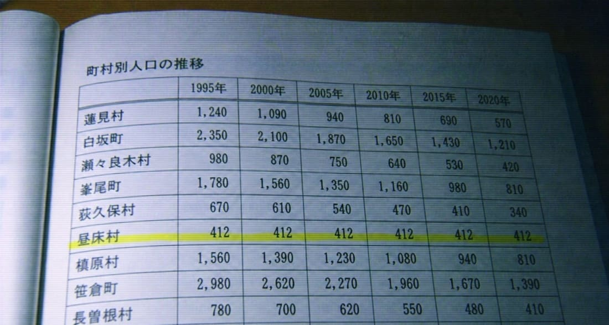
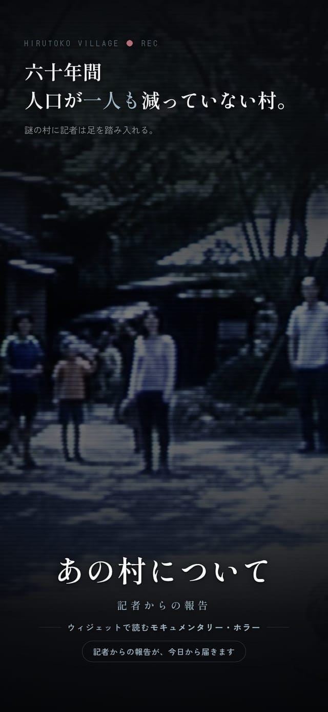
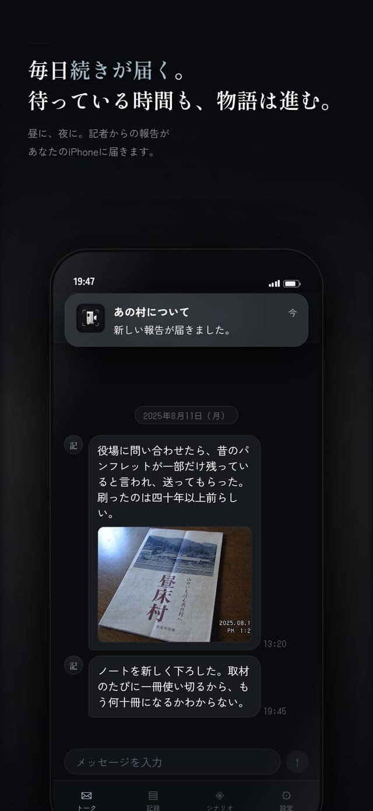
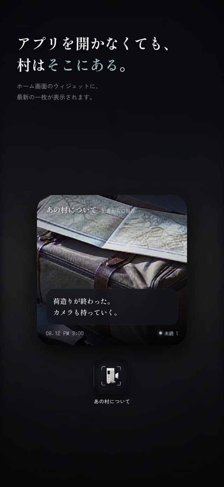
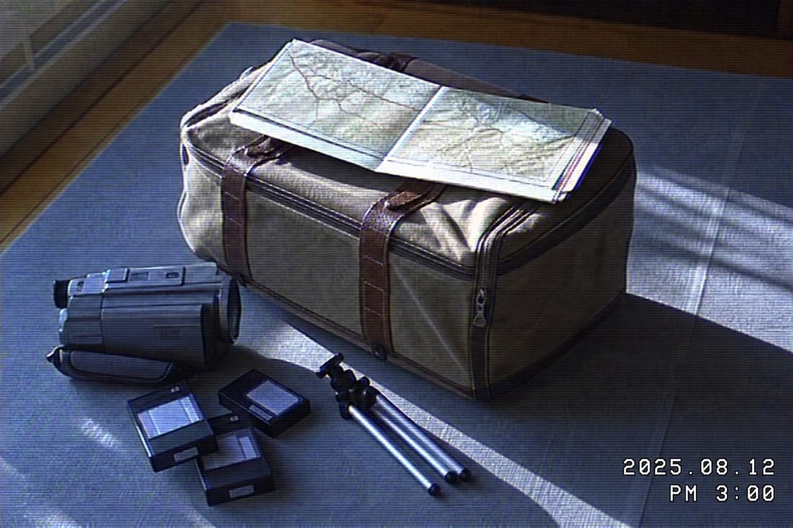
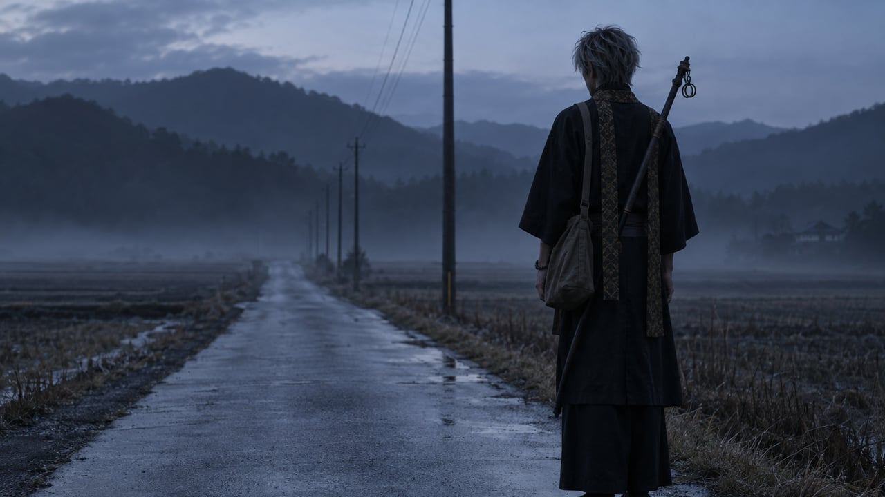

はじめに
山奥の村へ取材に向かった、
ひとりの記者がいます。
記者から毎日、写真と報告が届きます。
あなたにできるのは、読むことだけ。
あらすじ
「ひとつだけ、妙な村がある。」
― 出発前、記者からの報告より
「昼床村」――文献に一行しか出てこない、地形図にも名前のない村。
役場の統計では、何度数え直されても、人口が412人のまま一人も動いていません。

記者は取材のあいだ、旧知のあなたに宛てて、写真と短い報告を送り続けます。
最初は、ごく普通の取材記録です。
けれど村の様子は、日を追うごとに、静かに、少しずつ、おかしくなっていきます。
この物語の読みかた
一度に読めない物語です
物語は実際の時間に沿って配信されます。まとめ読みはできません。続きは、明日を待つしかありません。夜遅くに写真が届くこともあれば、丸一日、何の連絡も来ないこともあります。「連絡が来ない」こと自体が、物語の一部になっています。
読者は、返信できません
チャットのような画面ですが、入力欄は最初から使えません。励ますことも、引き返すよう伝えることも、通報することもできない。この「何もできなさ」を体験の中心に据えました。
ホーム画面に、最新の一枚が残り続ける
届いた写真はウィジェットに表示されます。アプリを開いていない時間にも、村の景色が日常に紛れ込みます。
静かなホラーです
驚かせる演出、大音量、突然現れる顔、画面のフラッシュ――そうした手法は一切使っていません。写真は古い家庭用ビデオのような粗い質感で統一し、記録として淡々と積み上がっていく手触りを重視しました。



概要

| 名称 | あの村について ―記者からの報告― |
|---|---|
| ジャンル | 静かな怪談ホラー／チャット形式のストーリー |
| 対応 | iPhone（iOS 16.4以降） |
| 価格 | 基本無料（アプリ内課金あり） 村に入る前の「前日譚」は購読なしで読めます。本編は月額480円・自動更新、はじめてご購読の方は最初の1週間が無料です。いつでも解約できます。 |
| 公開日 | 2026年8月19日 |
| 掲載 | 電ファミニコゲーマーさんにご紹介いただきました |
| 開発 | Ito Kento |
続報
第二章、準備中。
記者からの報告は、最後の一通で終わりました。
その先が、同じアプリに届きます。

第二章
あの人について
あの村の記録には、続きがある。
第二章のページへ →